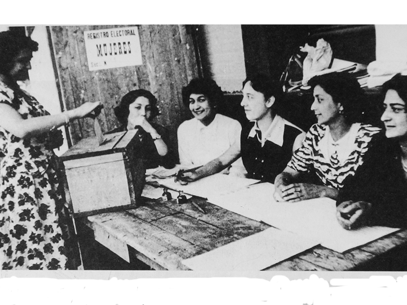
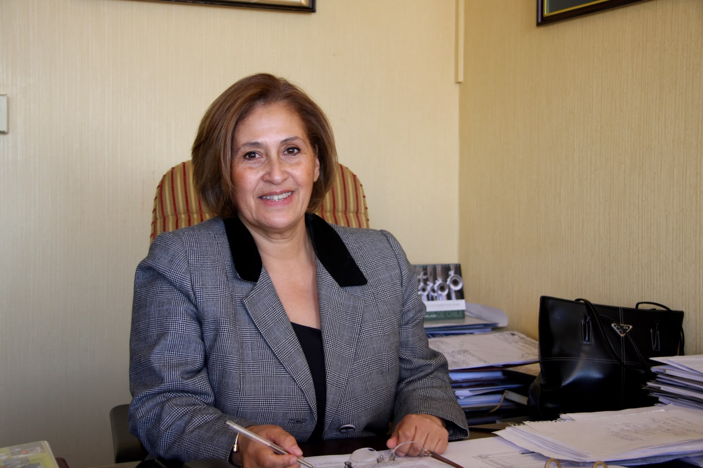
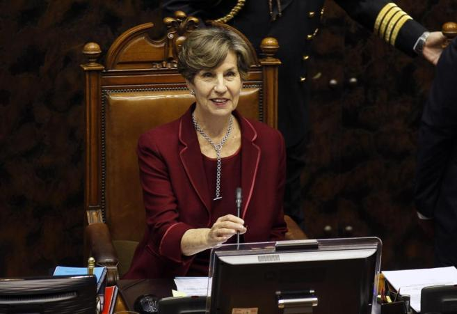
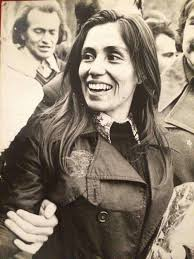
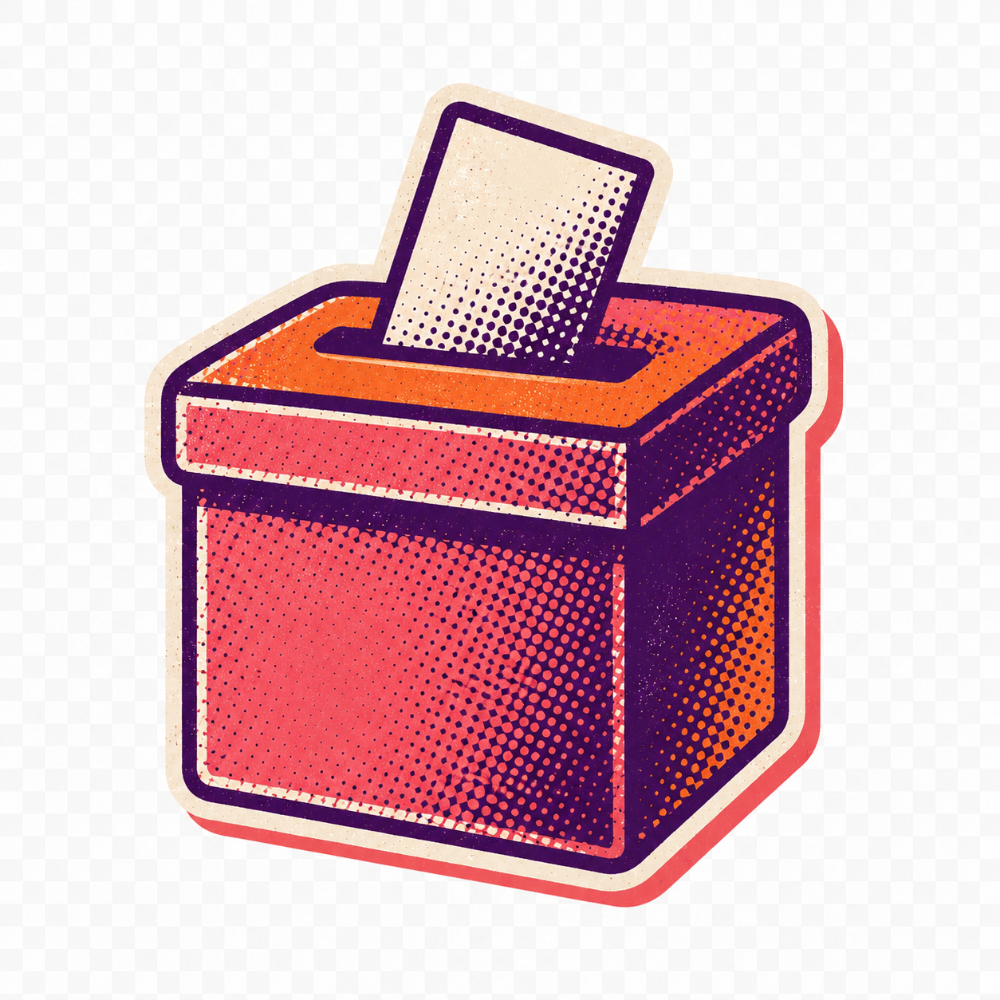

1934

Voto municipal femenino
Las mujeres obtienen el derecho a votar en elecciones locales, el primer reconocimiento formal de su participación cívica.
Webstory · Política chilena
El ascenso de liderazgos femeninos en el Congreso, los gabinetes y los partidos.
Cómo las mujeres ampliaron su presencia, liderazgo y diversidad en la política chilena.
Recorrer la historia
Punto de partida
Michelle Bachelet vuelve a aparecer en una escena de poder que parecía lejana para cualquier mujer chilena: la carrera por la Secretaría General de la ONU. Su nombre, asociado a la primera Presidencia femenina de Chile, a los ministerios de Salud y Defensa, a ONU Mujeres y a la Alta Comisionada de Naciones Unidas para los Derechos Humanos, permite mirar hacia atrás y hacerse una pregunta más amplia: ¿cómo llegaron las mujeres chilenas a ocupar espacios cada vez más altos en la política nacional e internacional?
Hoy en Chile contamos con 68 parlamentarias, 9 ministras y 2 presidentas de partidos políticos. Pero para llegar a este nivel de representación femenina se recorrió un camino largo, desigual y lleno de interrupciones. Hubo mujeres pioneras, conquistas institucionales y trayectorias políticas que abrieron la puerta a nuevas generaciones.
Esta historia no trata únicamente sobre “más mujeres en política”, sino sobre cómo ellas han ido ocupando, disputando y transformando los espacios donde se decide el poder.
Del voto a la Presidencia

Las mujeres obtienen el derecho a votar en elecciones locales, el primer reconocimiento formal de su participación cívica.

Apenas un año después de ejercer el voto, algunas mujeres son electas para dirigir municipios, entre ellas Alicia Cañas Zañartu.

La Ley 9.292 marca el hito más estructural: las mujeres pasan a votar en elecciones presidenciales y parlamentarias en igualdad de condiciones con los hombres.

Con el sufragio pleno recién conquistado, las mujeres comienzan a llegar al Congreso Nacional. Inés Enríquez fue la primera diputada electa en 1951.

Adriana Olguín de Baltra fue la primera mujer en asumir un ministerio en Chile y en América Latina, al ser nombrada ministra de Justicia.

María de la Cruz Toledo fue electa como la primera senadora de la historia de Chile.

El retorno a la democracia abrió el gabinete a mujeres en carteras ministeriales de peso. Una de ellas fue Soledad Alvear.

Adriana Muñoz fue designada como presidenta de la Cámara Baja, la máxima posición legislativa ocupada por una mujer hasta entonces.

El hito culminante: Michelle Bachelet se convierte en la primera mujer electa jefa de Estado en Chile.

Isabel Allende asumió la presidencia de la Cámara Alta. Por primera vez, una mujer ocupó dicho puesto.
La historia que contamos es la de una conquista lenta, desigual y progresiva de los espacios de decisión política en Chile. Desde las primeras mujeres electas en los años cincuenta hasta las parlamentarias, ministras y presidentas de partidos de los últimos años, las mujeres pasaron de ser casos excepcionales a ocupar un lugar cada vez más visible.
Abrirse paso en el Congreso
Antes de mirar los gráficos del Congreso, hay trayectorias que permiten entender lo que significó entrar, permanecer y liderar dentro del Poder Legislativo.

Una trayectoria prolongada desde la izquierda
Socióloga y militante del Partido Socialista, Isabel Allende ha construido una de las carreras legislativas más extensas y sostenidas de la política chilena reciente. Fue elegida diputada en 1993, 1997, 2001 y 2005, consolidando una presencia continua en el Congreso durante los años posteriores al retorno a la democracia.
Luego dio el salto al Senado, donde fue electa en 2009 y nuevamente en 2017. Este recorrido por ambas cámaras muestra una carrera marcada por la permanencia, la experiencia parlamentaria y la capacidad de sostener respaldo político a lo largo del tiempo.
Además de su presencia legislativa, presidió la Cámara de Diputadas y Diputados y, años más tarde, se convirtió en la primera mujer en presidir el Senado. Su trayectoria permite entender cómo algunas mujeres construyeron liderazgo desde el trabajo institucional sostenido.

Una vida ligada al liderazgo comunista
Profesora de formación y militante comunista desde muy joven, Gladys Marín fue una de las figuras políticas más emblemáticas de la izquierda chilena durante la segunda mitad del siglo XX.
Fue elegida diputada en 1965, reelecta en 1969 y nuevamente en 1973. En un Congreso donde la participación femenina era todavía excepcional, logró consolidarse como una voz relevante dentro del Partido Comunista.
Tras el golpe de Estado, su trayectoria quedó atravesada por la persecución, la clandestinidad y el exilio. Con el retorno a la democracia se convirtió en el principal rostro público del Partido Comunista; fue secretaria general, presidenta del partido y candidata presidencial en 1999.
Más mujeres en el Congreso

Desde 1950, la presencia de mujeres en el Congreso chileno ha seguido una trayectoria ascendente, aunque marcada por avances lentos, períodos de interrupción y diferencias importantes entre cámaras. Las primeras décadas muestran una representación reducida, especialmente en el Senado, mientras que en la Cámara de Diputadas y Diputados el crecimiento fue algo más temprano.
Esta evolución se interrumpió durante la dictadura, cuando el Congreso permaneció cerrado entre 1973 y 1990, y volvió a avanzar gradualmente con el retorno a la democracia. El cambio más pronunciado se observa a partir de las elecciones de 2017, las primeras realizadas bajo la ley de cuotas aprobada en 2015.
La presencia femenina en el Congreso no se ha limitado al acceso a un escaño. Aunque de manera lenta e irregular, las mujeres también han ido alcanzando sus espacios de conducción. Este proceso comenzó en 1993, cuando Eliana Caraball se convirtió en la primera mujer en ocupar la Vicepresidencia de la Cámara de Diputados.
Posteriormente, Adriana Muñoz fue la primera en presidir la cámara baja, en 2002; Isabel Allende se transformó en la primera presidenta del Senado, en 2014; y, un año después, Adriana Muñoz asumió como la primera vicepresidenta de la Cámara Alta.
Si bien en un inicio las mujeres electas en el Congreso pertenecían mayoritariamente al centro, la centroizquierda y la izquierda, desde los años noventa la presencia de mujeres de derecha tomó fuerza tanto en la Cámara Alta como en la Cámara Baja.
Al agrupar las elecciones de diputadas según su signo político o partido político, se observa que la representación femenina ha estado históricamente concentrada en la izquierda, la centroizquierda y el centro, aunque la derecha ha adquirido un peso creciente desde el retorno a la democracia.
Como el gráfico contabiliza cada elección, una misma parlamentaria puede aparecer más de una vez cuando fue reelecta, por lo que los porcentajes expresan el peso de cada sector en el total de escaños obtenidos por mujeres y no la cantidad de mujeres distintas.
Al agrupar las elecciones de senadoras por signo político, se observa que la izquierda, la centroizquierda y el centro tuvieron un peso importante en las primeras etapas de representación femenina, mientras que la derecha adquirió mayor presencia desde la recuperación democrática y se consolidó en las últimas décadas.
El gráfico por partidos muestra que la incorporación de mujeres al Senado fue más tardía y reducida que en la Cámara de Diputadas y Diputados. En los períodos más recientes, la presencia femenina se distribuye entre una mayor variedad de partidos y bloques.
El perfil profesional de las mujeres electas al Congreso muestra una fuerte concentración en áreas tradicionalmente vinculadas al ejercicio público. Derecho encabeza el ranking, seguido por trayectorias políticas o sociales, educación, comunicación, ingeniería, medicina y sociología.

Del gabinete a La Moneda y al mundo
La historia de Michelle Bachelet permite conectar el aumento de mujeres en los gabinetes con la posibilidad de acceder a cargos de poder aún mayores. Antes de convertirse en la primera y, hasta ahora, única mujer en asumir la Presidencia de Chile, construyó una trayectoria marcada por el servicio público, la experiencia ministerial y la apertura de espacios históricamente ocupados por hombres.
Médica cirujana de profesión, con especialización en pediatría y salud pública, inició su camino en áreas vinculadas a la salud, pero pronto proyectó su liderazgo hacia el centro de la toma de decisiones del Estado. Su paso por el Ministerio de Salud y, especialmente, por el Ministerio de Defensa marcó un hito en la política chilena.
Su llegada a La Moneda no solo representó un triunfo electoral, sino también un cambio simbólico. Tras ejercer la Presidencia, fue directora ejecutiva de ONU Mujeres y Alta Comisionada de Naciones Unidas para los Derechos Humanos entre 2018 y 2022.
Más mujeres en los gabinetes
La evolución de las designaciones de ministras muestra un cambio significativo en la participación de las mujeres en el Poder Ejecutivo chileno. Tras el nombramiento de la primera ministra en 1952, las designaciones femeninas fueron escasas y esporádicas durante gran parte del siglo XX.
Recién a partir de la década de 1990 comenzó a observarse un incremento gradual, que se aceleró desde 2006 con el primer gobierno de Michelle Bachelet, cuando la incorporación de mujeres a los gabinetes dejó de ser una excepción para convertirse en una política sostenida.
El ranking de ministerios muestra que la presencia de ministras no se distribuye de manera uniforme entre todas las carteras, sino que tiende a concentrarse en ciertos espacios del Estado. Las áreas con mayor frecuencia corresponden principalmente a ministerios vinculados a políticas sociales, bienestar, derechos, educación, salud y desarrollo social.
En cambio, ministerios considerados estratégicos o de mayor peso político-institucional, como Interior, Hacienda, Defensa o Relaciones Exteriores, aparecen con menor frecuencia dentro del registro.
Durante gran parte del siglo XX, las designaciones de ministras fueron escasas y ocurrieron de manera aislada, concentrándose principalmente en gobiernos de centroizquierda. A partir de la década del 2000, la incorporación de mujeres a los gabinetes comienza a acelerarse y a ampliarse hacia otros sectores.
El punto más alto de la serie corresponde a 2022, año en que se registra el mayor número de designaciones femeninas, distribuidas entre distintos signos políticos.
La distribución de las designaciones de ministras por partido político evidencia que la incorporación de mujeres a los gabinetes ministeriales ha sido impulsada por una amplia diversidad de colectividades. Destaca la alta presencia de ministras independientes.
Entre los partidos políticos, el Partido Socialista concentra el mayor número de designaciones, seguido por el Partido Demócrata Cristiano, el Partido por la Democracia y la Unión Demócrata Independiente.
El perfil profesional de las ministras chilenas evidencia un claro predominio de las carreras vinculadas al Derecho. Con 35 designaciones, las abogadas constituyen la profesión más frecuente entre las mujeres que han ocupado cargos ministeriales.
Gladys Marín y el poder de los partidos
Del liderazgo excepcional a una tendencia cada vez más transversal.
Se ha tratado de un aumento acelerado en la presidencia de mujeres en partidos políticos en nuestro país. Entre 1989 y 2009, solo cuatro mujeres más fueron electas después de la primera. En los siguientes casi diez años, de 2010 a 2019, ocho mujeres fueron electas y, en los últimos seis años, once mujeres han sido electas.
Desde 1989, más de 20 mujeres han asumido la presidencia de partidos políticos en Chile; partidos que van desde la izquierda a la ultraderecha. Más de la mitad de ellas han sido electas durante los últimos seis años.
Durante este período, la elección de mujeres para presidir partidos fue limitada y concentrada principalmente en la izquierda.
El liderazgo femenino comenzó a expandirse hacia otros sectores políticos, incluyendo centroderecha y derecha.
Se observa el escenario de mayor diversidad política, incluyendo una presidenta en la ultraderecha.
En un principio, era mucho más evidente la relación entre inclinación ideológica y presidencia femenina, siendo una situación casi exclusivamente de partidos de izquierda o centroizquierda. Sin embargo, los gráficos muestran que la participación femenina se expandió hacia otros sectores con el tiempo.
Tal como en el Congreso y los gabinetes ministeriales, Derecho es la carrera más común entre las mujeres que han sido electas presidentas de partidos políticos, seguida por Pedagogía, Ciencias Políticas y Sociología.

El poder femenino más allá de la izquierda
Economista y representante de la derecha chilena, Evelyn Matthei ha construido una de las trayectorias políticas más reconocibles y persistentes desde ese sector. Fue elegida diputada en 1989 y nuevamente en 1993, inicialmente vinculada a Renovación Nacional.
A fines de los años noventa dio el salto al Senado, siendo electa en 1997 y luego reelecta en 2005 por la Unión Demócrata Independiente. Este paso desde la Cámara al Senado refleja una continuidad parlamentaria poco frecuente para las mujeres de la época.
Después de su etapa parlamentaria, fue ministra del Trabajo y Previsión Social durante el primer gobierno de Sebastián Piñera y luego alcaldesa de Providencia durante dos períodos. Además, fue candidata presidencial en 2013, elección en la que compitió en segunda vuelta con Michelle Bachelet.
Un poder cada vez más transversal
La principal revelación de la investigación es que el poder político femenino en Chile dejó de ser un fenómeno asociado exclusivamente a sectores progresistas. Aunque la izquierda y la centroizquierda tuvieron un papel relevante en las primeras etapas, los datos muestran que el liderazgo femenino se ha expandido hacia el centro, la derecha y la extrema derecha.
La trayectoria de Evelyn Matthei permite leer este cambio con claridad: una mujer de derecha que pasó por la Cámara, el Senado, un ministerio, un municipio y candidaturas presidenciales. Pero su historia no es aislada. Los gráficos del Congreso, los gabinetes y los partidos muestran que las mujeres han ido ocupando espacios desde distintos sectores políticos.
El avance no fue lineal. Hubo momentos de crecimiento, interrupciones institucionales y largos períodos de baja representación. Sin embargo, en las últimas décadas se observa una transformación clara: las mujeres no solo aumentan en número, sino que comienzan a ocupar cargos de mayor jerarquía y provienen de sectores políticos cada vez más diversos.
Los caminos hacia el poder
Los datos muestran que no existe una sola ruta para llegar al poder. Algunas mujeres construyeron sus trayectorias desde el Derecho, otras desde la educación, la medicina, la sociología, el periodismo, la militancia partidaria, la administración pública o la experiencia territorial.
La profesionalización aparece como una dimensión importante del avance femenino, pero no como un molde único. Las trayectorias de Bachelet, Allende, Matthei y Marín muestran justamente esa diversidad.
En conjunto, los rankings de profesiones del Congreso, los gabinetes y las presidencias de partidos permiten mirar más allá de los cargos. Ayudan a preguntarse quiénes son las mujeres que llegan a esos espacios, qué experiencias acumulan y qué tipos de saberes han sido más reconocidos dentro de la política chilena.
Más mujeres al mando
En conjunto, los datos muestran que esta historia va mucho más allá de sumar mujeres a la política. Lo que ha cambiado es la forma en que se distribuye y se ejerce el poder: en el Congreso, en los gabinetes y en la conducción de los partidos.
El avance ha sido lento y todavía incompleto, pero ya transformó para siempre el rostro de la política chilena.